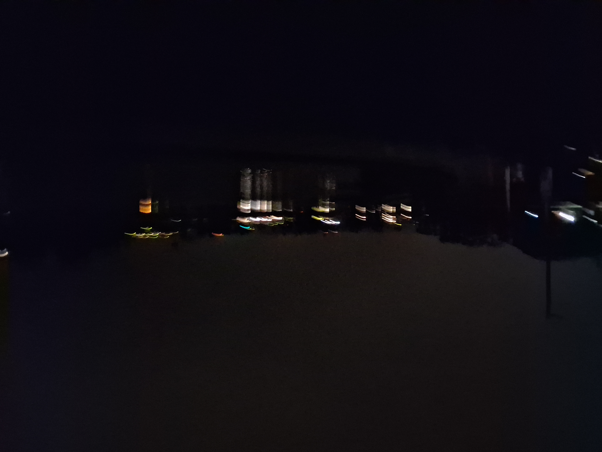
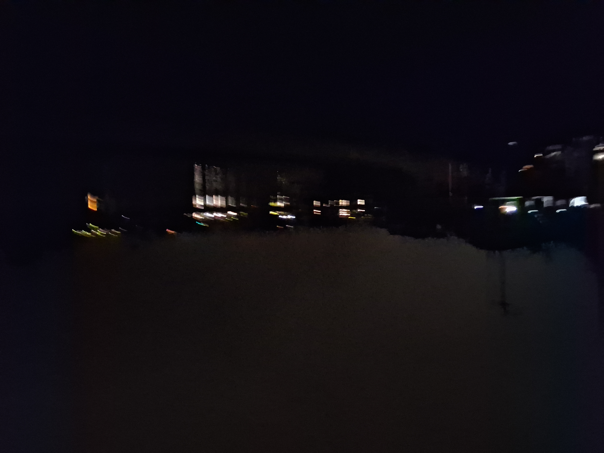
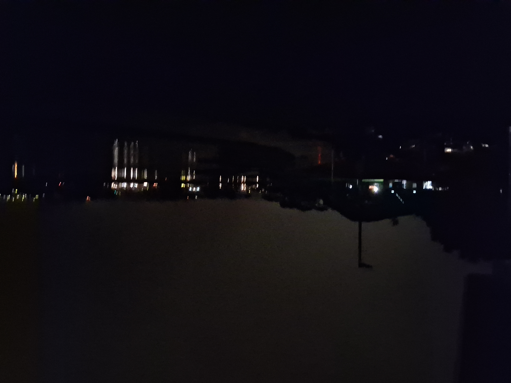

Aloha and welcome to the foundation.
When you look at a piece of wild, overgrown land, what do you see? Some see heavy labor; some see chaos. At GoldenHandz Agri & Media LLC, operating out of Pahoa and Hilo, we see raw potential—a blank canvas ready to be restored, cultivated, and transformed into a living, breathing food forest.
Here are the first operational photos from our site, documenting initial layouts and ongoing land restoration.


